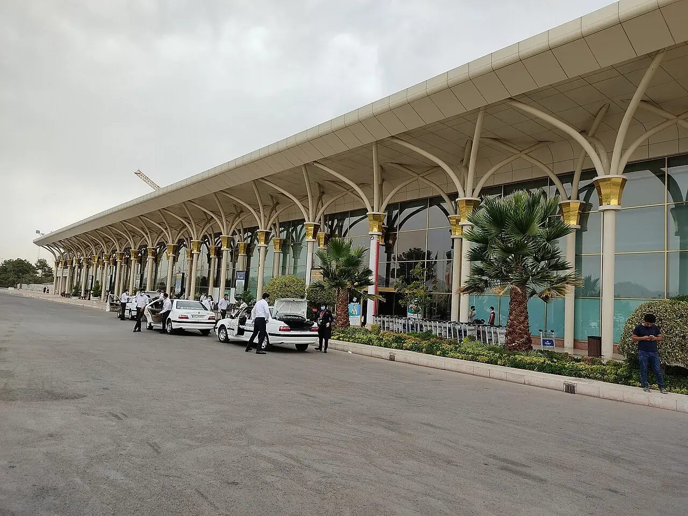

دليل الزائر العربي · تسجيل شريحة إيرانية بجواز السفر: ما الذي تتحقق منه؟
تسجيل شريحة إيرانية بجواز السفر: ما الذي تتحقق منه؟
الإجابة المختصرة
قد تطلب نقطة البيع الرسمية جواز السفر وبيانات إضافية تختلف بحسب المشغل ونوع الشريحة. قبل المغادرة، تأكد من أن اسم صاحب الخط مطابق لوثيقتك، وأن رقم الهاتف والباقة ومدة الصلاحية مثبتة في الإيصال أو نظام المشغل. لا تترك جوازك لدى البائع ولا تشترِ خطاً مسجلاً باسم شخص آخر على أنه خطك.

خطوات التحقق من تسجيل شريحة إيرانية باسم الزائر: الجواز، مطابقة الاسم، الإيصال، التفعيل، الباقة وحقوق ملكية الخط.
قبل الذهاب إلى نقطة البيع
تأكد من أن هاتفك مفتوح الشبكة، وأنه يقبل نوع الشريحة التي ستشتريها. خذ جواز السفر الأصلي، واسأل مسبقاً إن كان يلزم عنوان إقامة أو وثيقة إضافية. لا ترسل نسخة الجواز إلى حساب غير رسمي قبل معرفة الجهة التي تطلبها والغرض من استخدامها.
أثناء التسجيل
تعامل مع فرع أو نقطة بيع رسمية للمشغل أو موزع معتمد يمكن التحقق منه. اطلب توضيح نوع الخط: مسبق الدفع أم لاحق الدفع، وهل المنتج مخصص للزوار. قد تختلف المستندات والخطوات بحسب المشغل والمنتج والجنسية، لذلك لا تعتمد على تجربة شخص آخر باعتبارها قاعدة عامة.
تحقق من ملكية الخط
قبل المغادرة، راجع الاسم اللاتيني وبيانات صاحب الخط بالطريقة التي يتيحها المشغل، وتأكد من أن الرقم الجديد ورقم الشريحة أو مرجع الطلب مثبت في الإيصال. إذا كان التسجيل لا يظهر باسمك أو كانت البيانات غير صحيحة، اطلب تصحيحها قبل الاستخدام ولا تقبل وعداً شفهياً بأن الأمر سيُعدل لاحقاً.
تحقق من السعر والتفعيل
اطلب تفصيلاً منفصلاً لسعر الشريحة والباقة وحجم البيانات ومدة الصلاحية وأي رسوم. جرّب اتصالاً أو بيانات إن أمكن، وتأكد من إعداد خط البيانات الصحيح في الهاتف. احتفظ بالإيصال ورقم خدمة العملاء. لا تترك جواز السفر أو الهاتف عند البائع بعد انتهاء الإجراء.
إذا لم تعمل الشريحة
لا تغيّر إعدادات الأمان أو تشارك رموز التحقق مع أي شخص. ارجع إلى نقطة البيع بالإيصال أو اتصل بخدمة المشغل الرسمية. اسأل هل الخط فُعل فعلاً، وهل الباقة بيانات أم مكالمات، وهل يحتاج الجهاز إلى إعداد APN. لا نعدك بحل فوري؛ يعتمد الأمر على نظام المشغل والجهاز.
الأسئلة الشائعة
هل يجب أن أترك جواز السفر عند البائع؟
لا تترك أصل جوازك لدى نقطة البيع. قد يطلب الموظف الاطلاع عليه أو بياناته وفق الإجراء، لكن احتفظ بوثيقتك.
كيف أتأكد أن الخط باسمي؟
اطلب تأكيد التسجيل من النظام أو الإيصال الرسمي، وراجع الاسم ورقم الجواز أو مرجع التسجيل بالطريقة التي يسمح بها المشغل.
هل كل الشرائح تحتاج الوثائق نفسها؟
لا. تختلف الإجراءات بحسب المشغل ونوع الخط والباقة والمنتج المخصص للزوار.
هل أستطيع شراء خط جاهز باسم شخص آخر؟
لا تعتبره خطاً مملوكاً لك. اطلب تسجيل الخط وفق القواعد باسم صاحبه الحقيقي، حتى لا تفقد القدرة على إثبات الملكية أو استعادة الخدمة.
هل تحتاج إلى تنسيق محلي في مشهد؟
يمكنك إرسال استفسار باللغة العربية عن الإقامة أو التنقل أو المساعدة في فهم الإجراءات المحلية. حسين ليس جهة إصدار مالية أو شركة اتصالات، ولا يضمن قبول أي طلب؛ تُؤكد الخدمة والرسوم كتابةً قبل أي اتفاق.